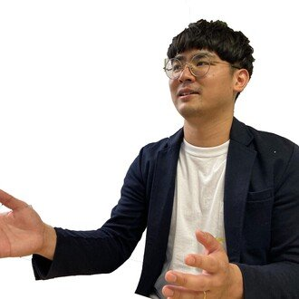

未経験からのIT転職、地方（福岡）で描くITキャリア。いまも第一線で働くエンジニアが、国家資格キャリアコンサルタントとして、あなたの意思決定を隣で支えます。
ひとつでも当てはまるなら、話すことで整理できます。まずは現在地を一緒に確かめましょう。
未経験からIT業界へ。何から始めればいいのか分からない
書類選考で止まってしまう。通る書き方が知りたい
地方在住だから、IT転職は難しいと思っている
今後のキャリアに、漠然とした不安がある
日系から外資ITへ。選考も働き方も分からない
AI時代に、どんなスキルを身につけるべきか
気軽な壁打ちから、じっくりの継続伴走まで。オンライン中心・全国対応（福岡は対面も相談可）。
専門学校・大学、自治体・就労支援機関、IT企業などへ。現役エンジニア × 国家資格キャリアコンサルタントの視点で、現場のリアルを届けます。オンライン全国対応／30〜90分・ワークショップ形式も可／講演料は応相談。
大学中退という回り道から、日系・外資ITの現場を歩いてきました。だからこそ、経歴に自信が持てない方にも等身大で向き合えます。
